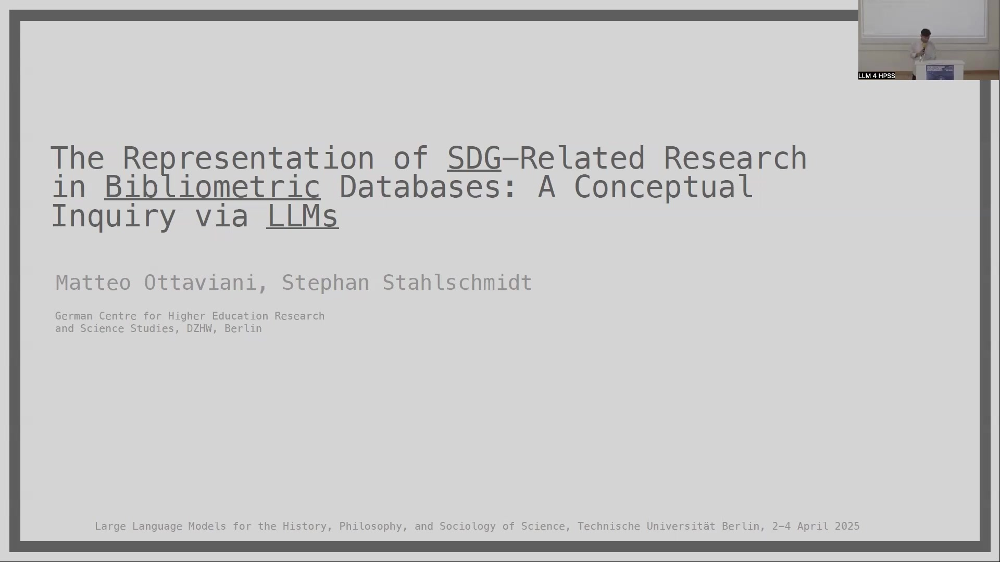
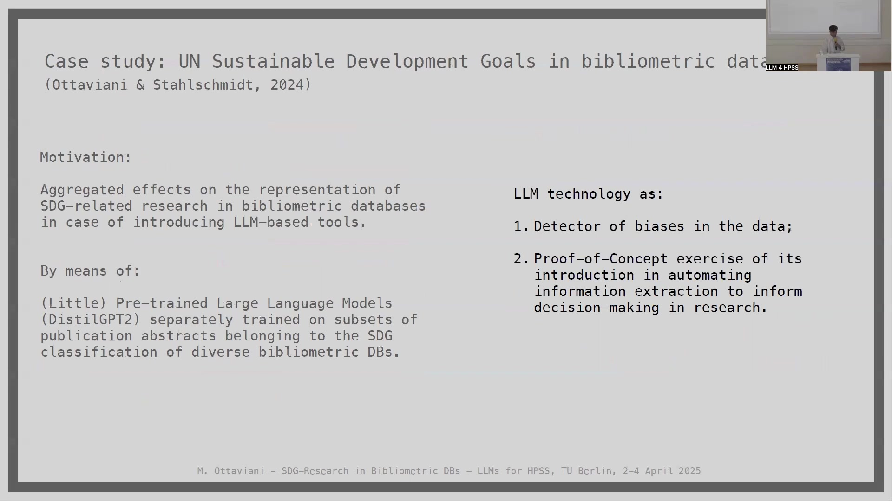
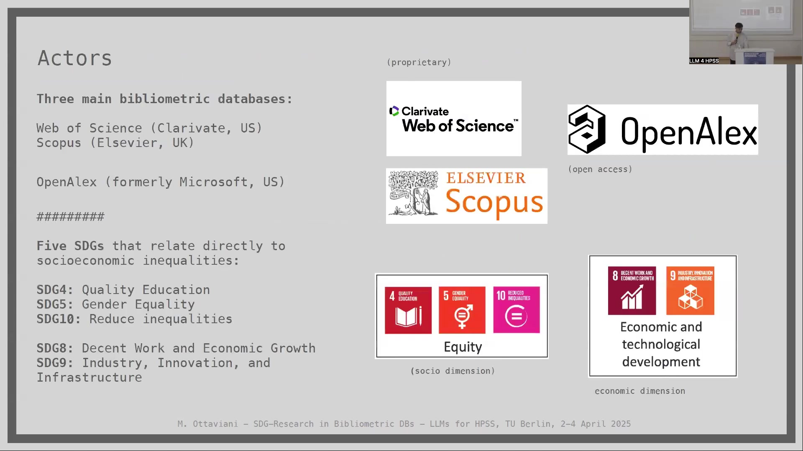
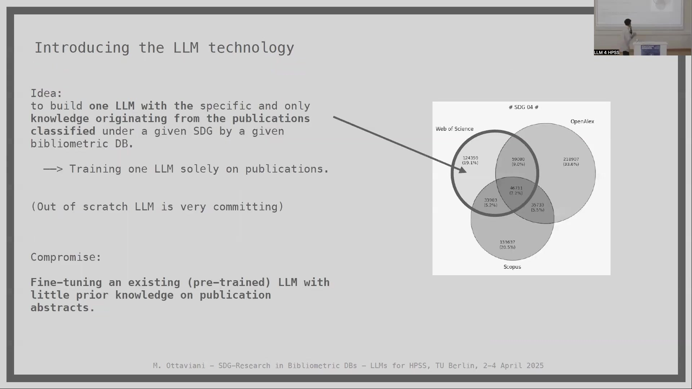
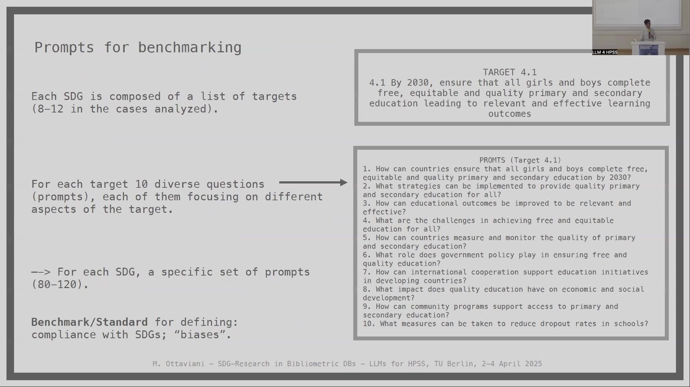

9 SDG-Research in Bibliometric DBs - LLMs for HPSS
Overview
Researchers investigated the application of Large Language Models (LLMs) to assess biases within publications classified under Sustainable Development Goals (SDGs). This inquiry spanned three major bibliometric databases: Web of Science, Scopus, and OpenAlex. The core motivation stemmed from these databases’ critical role in the sociology of science, influencing academic behaviour, funding, and policy. Crucially, they also reflect political and commercial interests, possessing a performative nature.
This project built upon previous work that identified minimal overlap in SDG-labelled publications across different providers. It aimed to understand the aggregate effects of LLM-based tools on the representation of SDG-related research. Furthermore, the study conducted a proof-of-concept exercise on automating information extraction for research decision-making. Investigators selected five SDGs directly related to socioeconomic inequalities: SDG4 (Quality Education), SDG5 (Gender Equality), SDG10 (Reduced Inequalities), SDG8 (Decent Work and Economic Growth), and SDG9 (Industry, Innovation, and Infrastructure).
For classification, the team utilised a shared corpus of 15,471,336 jointly indexed publications, spanning January 2015 to July 2023. Regarding the LLM component, researchers fine-tuned DistilGPT2, a lightweight, open-source model, separately on publication abstracts for each SDG and database combination. This process yielded 15 distinct models, a choice that minimised pre-existing knowledge about SDGs within the model. Prompts, derived from SDG targets (8-12 targets per SDG, 10 diverse questions per target), benchmarked the fine-tuned LLMs, employing three decoding strategies: top-k, nucleus, and contrastive search. Noun phrase extraction from LLM responses facilitated analysis across four dimensions: locations, actors, data/metrics, and focuses.
Key findings revealed a systematic oversight in the data concerning disadvantaged individuals, the poorest countries, and underrepresented topics explicitly mentioned in SDG targets. Conversely, economic superpowers received considerable attention. The study highlighted the decisive impact of bibliometric SDG classification and the sensitivity of LLMs to training data, model architecture, parameters, and decoding strategies.
9.1 Background: SDG Classification in Bibliometric Databases

Researchers initiated an investigation to employ Large Language Models (LLMs) as a technology for assessing biases within publications classified by three principal bibliometric databases. This work acknowledges that bibliometric databases, such as Web of Science, Scopus, and OpenAlex, function as critical digital infrastructures, enabling bibliometric analyses and impact assessments throughout the scientific community. Nevertheless, these databases possess a performative nature, shaped by particular understandings of the science system and specific value attributions, as Whitley (2000) and Winkler (1988) have noted.
Major bibliometric databases have recently implemented classifications that align scholarly publications with the United Nations Sustainable Development Goals (SDGs). However, prior research, notably by Armitage et al. (2020), discovered significant discrepancies in SDG labelling across various providers like Elsevier, Bergen, and Aurora, revealing minimal overlap in the resulting datasets. Such differences in classification carry substantial implications; they can foster varying perceptions of research priorities, which, in turn, may influence resource allocation and policy decisions.
Furthermore, these databases exert considerable influence over academics, researchers, funding bodies, and policymakers, whilst also responding to diverse political and commercial interests. The current study specifically considered Web of Science, Scopus, and OpenAlex, building upon earlier findings that highlighted the limited overlap in publications when different SDG search queries were applied.
9.2 Case Study Objectives and Framework

Investigators conducted a case study, detailed by Ottaviani & StahlSchmidt (2024), focusing on the representation of UN Sustainable Development Goals within bibliometric data. A primary motivation involved assessing the aggregated effects on how SDG-related research is portrayed in bibliometric databases, particularly if LLM-based tools were to be introduced. To achieve this, researchers employed DistilGPT2, a minimally pre-trained Large Language Model. They separately trained this model on distinct subsets of publication abstracts, each corresponding to the SDG classifications provided by the diverse bibliometric databases.
The LLM technology served a dual purpose in this study. Firstly, it functioned as a detector of biases present in the data. Secondly, it acted as a proof-of-concept exercise, demonstrating the potential of LLMs in automating information extraction to inform research-related decision-making. Researchers aimed to understand the aggregate effects stemming from metadata processing by bibliometric databases and how these subsequently influence various stakeholders, including researchers, policymakers, and consultants. Ultimately, the project sought to develop a generalisable exercise for assessing the potential impact of such technologies on research policy.
A conceptualised chain of dependencies illustrates this process: SDG classification initially defines what constitutes “Research” on SDGs. Various actors, including researchers, small and medium-sized enterprises (SMEs), governments, and other intermediaries, then process this research. Subsequently, this processed research informs “Decision-making to align with SDGs,” which in turn affects “Socioeconomic inequalities.” Parallel to this, the LLM, acting as a “detector of ‘biases’,” influences the “Introduction of LLM in Research Policy,” which also has repercussions for “Socioeconomic inequalities.” Therefore, alterations in the metadata that define “research on SDGs” can significantly impact advice, choices, indicators, and implemented measures.
9.3 Methodology: Actors, Data, and SDG Selection

The research design incorporated three principal bibliometric databases as key actors. These included two proprietary systems, Web of Science (operated by Clarivate, US) and Scopus (managed by Elsevier, UK), alongside the open-access database OpenAlex (formerly a Microsoft entity, US). Investigators focused their analysis on five specific UN Sustainable Development Goals, chosen for their direct relevance to socioeconomic inequalities. They categorised these into two dimensions: the socio dimension, encompassing SDG4 (Quality Education), SDG5 (Gender Equality), and SDG10 (Reduce Inequalities); and the economic dimension, which included SDG8 (Decent Work and Economic Growth) and SDG9 (Industry, Innovation, and Infrastructure).
For data processing, researchers utilised a jointly indexed subset comprising 15,471,336 publications. They compiled this dataset by collecting publications shared across all three bibliometric databases, identifying them through exact DOI matching, and covering the period from January 2015 to July 2023. Subsequently, the team undertook an analysis of the performance of the three distinct classification standards for the five selected SDGs. This approach led to the creation of three separate subsets of publications for each SDG—one corresponding to each bibliometric database—forming the basis for the comparative analysis.
9.4 Comparative Analysis of SDG-Classified Papers

A comparative analysis, detailed in Ottaviani & StahlSchmidt (2024), examined the overlap of papers classified under specific Sustainable Development Goals (SDGs) across Web of Science, OpenAlex, and Scopus, particularly for the socio-dimension SDGs. For SDG4 (Quality Education), Scopus classified the largest share of publications (339,063; 52.2%), followed by OpenAlex (218,907; 33.6%), and Web of Science (124,359; 19.1%). The intersection of all three databases for SDG4 contained 46,711 publications (7.2%).
Concerning SDG5 (Gender Equality), Web of Science accounted for the majority of classifications (373,224; 57.4%), with Scopus classifying 82,277 (26.2%) and OpenAlex 38,066 (12.1%). Notably, all three databases commonly classified only 21,770 publications (6.9%) under SDG5. Investigators observed that Scopus did not designate some publications present in its database as SDG5. Furthermore, Web of Science’s SDG5 classifications included approximately 10% of publications from mathematics, such as those on geometrical differential equations, indicating potential discrepancies in classification criteria.
For SDG10 (Reduce Inequalities), Scopus again led in volume (236,665; 36.2%), with OpenAlex (213,419; 32.7%) and Web of Science (99,460; 15.2%) following. The common overlap for SDG10 was the smallest, at 13,319 publications (2.0%). These findings generally align with Armitage (2020), underscoring the consistently small overlap in SDG labelling across different bibliometric providers. This limited congruence highlights the varying interpretations and applications of SDG classifications.
9.5 LLM Selection and Fine-Tuning Strategy

Researchers conceptualised the development of Large Language Models (LLMs) possessing knowledge derived exclusively from publications classified under a specific Sustainable Development Goal (SDG) by a particular bibliometric database. The initial ambition to train such LLMs from scratch solely on these publications proved a substantial undertaking due to its resource-intensive nature. Consequently, a compromise involved fine-tuning an existing, pre-trained LLM that possessed minimal prior knowledge, using the abstracts of the selected publications.
Leading commercial and open-source pre-trained LLMs, such as GPT-4 (with 1.76 trillion parameters), were deemed ineligible for this work. Their unsuitability stemmed from their extensive pre-training datasets (which include sources like Wikipedia and Reddit conversations), meaning they already embed considerable knowledge about SDGs and possess strong, pre-existing semantic associations. To circumvent this, investigators selected DistilGPT2. This model, a “very light” English-speaking variant of the open-source GPT-2, employs a “distillation” technique (Sanh, 2019) and has significantly fewer parameters (82 million).
Its advantages included feasibility for use with proprietary data and its minimally instructed nature, which ensures its behaviour is more strongly influenced by the fine-tuning data. Researchers operated under the premise that DistilGPT2 had no significant prior semantic knowledge relevant to the publications or the prompts used. This approach facilitated the fine-tuning of 15 distinct DistilGPT2 models, each tailored to a specific combination of one of the three bibliometric databases and one of the five chosen SDGs (DistilGPT2{bibDB, SDG}).
9.6 Prompt Engineering and LLM Benchmarking

The United Nations’ Sustainable Development Goals (SDGs) are structured with specific targets; for instance, SDG4 (Quality Education) includes targets such as ensuring universal completion of primary and secondary education (Target 4.1) and equal access to tertiary education (Target 4.3), amongst others (typically 8-12 targets for the SDGs analysed, as per the 2030 Agenda for SDGs, UN). To benchmark the fine-tuned LLMs, researchers developed a systematic approach to prompt engineering. For each individual target within an SDG, they crafted ten diverse questions, or prompts, each designed to probe different facets of that target.
This methodology yielded a unique set of 80 to 120 prompts for every SDG under investigation. These prompts established a benchmark, enabling the assessment of the LLMs’ compliance with SDG objectives and the identification of potential “biases” in their responses. For example, for Target 4.1 of SDG4, prompts included questions like, “How can countries ensure that all girls and boys complete free, equitable and quality primary and secondary education by 2030?” and others addressing strategies, outcome improvements, and challenges.
The research design followed a structured workflow for each bibliometric database (DB) and SDG combination. Initially, a set of publication abstracts, classified under a specific SDG by a particular database, served as the input for fine-tuning a DistilGPT-2 model. The resultant fine-tuned model (Fine-tuned DistilGPT-2 SDG# DB#) then processed the set of prompts specifically designed for that SDG. This processing employed three distinct decoding strategies—top-k, nucleus, and contrastive search—generating three sets of responses. Finally, a “prompts’ words filter” was applied to these responses, leading to the extraction of noun phrases (Noun phrases SDG# DB#), which formed the basis for subsequent analysis.
9.7 SDG 4 Results: Unaddressed Targets and Biases

Researchers analysed the responses generated by the fine-tuned Large Language Models (LLMs) by matching extracted noun phrases with the official SDG targets. This analysis spanned four key dimensions: Locations, Actors, Data/Metrics, and Focuses. For each SDG, the assessment aimed to determine, firstly, the LLM’s compliance with its targets and, secondly, any discernible biases. Notably, the team also observed differences in the outputs corresponding to the different source bibliometric databases.
Taking SDG4 (Quality Education) as an illustrative example, the LLMs, despite receiving target-specific questions, failed to address several critical areas. In terms of Locations, whilst countries like South Africa, the U.S., Australia, China, and Hong Kong appeared (reflecting the content of unique database subsets), a significant omission of African countries (beyond South Africa), Developing Countries more broadly, Least Developed Countries, Other Developing Countries, and Small Island Developing States was evident—all explicitly or implicitly relevant to SDG4 targets.
Regarding Actors, terms like “Classroom” and “Family” appeared, and general categories such as “All Women and Men,” “Children,” “Teachers,” and “Youth” were addressed. However, the LLM responses did not adequately cover crucial vulnerable groups specified in SDG4 targets, including “The Vulnerable,” “Persons With Disabilities,” “Indigenous Peoples,” “Children In Vulnerable Situations,” and “All Learners.”
The Data/Metrics dimension saw mentions of “Survey,” “PISA,” “Evaluation,” “Self-Efficacy,” and “Thematic Analysis,” indicating a focus on certain research methodologies and assessment tools. For Focuses, whilst aspects like “Quality Primary and Secondary Education” and “Access” were addressed, numerous target areas remained unmentioned. These unaddressed focuses included:
“Affordable And Quality Technical, Vocational And Tertiary Education”
“Relevant Skills” for employment
“Vocational Training”
“Scholarships”
“Safe, non-violent, inclusive learning environments”
“Sustainable Lifestyles”
“Human Rights”
“Global Citizenship”
“Appreciation Of Cultural Diversity”
“Free primary and secondary education”
“Tertiary education”
This pattern of overlooking specific target elements, particularly concerning sensitive locations, vulnerable actors, and key educational focuses, emerged as a recurrent finding.
9.8 Cross-SDG Analysis: Systematic Oversights

Across the five Sustainable Development Goals (SDGs) analysed, several consistent patterns and systematic oversights emerged from the LLM responses. Regarding Locations, least developed countries received scant attention; for instance, Sub-Saharan Africa appeared notably only in the context of SDG8. The United States featured with such prominence that it suggested an “undoubted monopoly” in the data’s geographical focus. Following the U.S., South Africa and China were the most frequently cited locations, with the United Kingdom and Australia also appearing.
Concerning Actors, a particularly troubling finding was the systematic overlooking of discriminated and vulnerable categories of people. This oversight persisted across all five SDGs examined, indicating a significant gap in the LLM-generated content relative to the inclusive aims of the SDGs themselves.
In the Metrics dimension, the LLMs frequently referenced various data sources, such as Demographic and Health Surveys (DHS) and World Values Surveys (WVS), alongside numerous other metrics, indicators, and benchmarks. A range of research methodologies also appeared, including theoretical and empirical approaches, thematic analysis, market dynamics, and macroeconomic studies. An interesting distinction arose from the source databases: for three of the SDGs, LLMs trained on Web of Science data tended to reflect a more theoretical research approach, whereas those trained on Scopus and OpenAlex data exhibited a more empirical orientation.
Finally, whilst Focuses were generally SDG-specific, the LLMs often failed to address the most sensitive topics embedded within the SDG targets. Examples of such overlooked critical issues include human trafficking, human exploitation, and migration, all of which are pertinent to the broader aims of socioeconomic equality and development.
9.9 Summary and Limitations

The investigation’s principal finding highlights that introducing Large Language Models (LLMs) as an analytical AI tool, positioned between the initial SDG classification of scientific literature and its subsequent use by policymakers, uncovers a systematic oversight within the data. Specifically, scientific publications, when classified by SDGs and processed by these LLMs, tend to neglect the most disadvantaged categories of individuals, the poorest countries, and various underrepresented topics that the SDG targets explicitly aim to address. Conversely, the analysis indicates that substantial attention is directed towards economic superpowers and highly developing nations. This outcome underscores how an ostensibly objective, science-informed practice, such as the bibliometric classification of SDGs, can have decisive and potentially skewed impacts on the perceived landscape of research.
Researchers acknowledge several inherent limitations in this study. LLMs exhibit high sensitivity to various factors, including model architecture; although the choice of DistilGPT2 aimed to mitigate some aspects of this, more developed architectures could yield different outcomes. Sensitivity to training data presents another critical factor, which this work partially addressed by utilising three distinct bibliometric databases. Furthermore, (hyper-)parameters and the chosen decoding strategy significantly influence LLM outputs; the use of three different decoding strategies (top-k, nucleus, and contrastive search) attempted to account for this variability. The study presents a general framework, and whilst its application to very specific, applied cases could potentially produce different results, the researchers express some reservation about this likelihood.